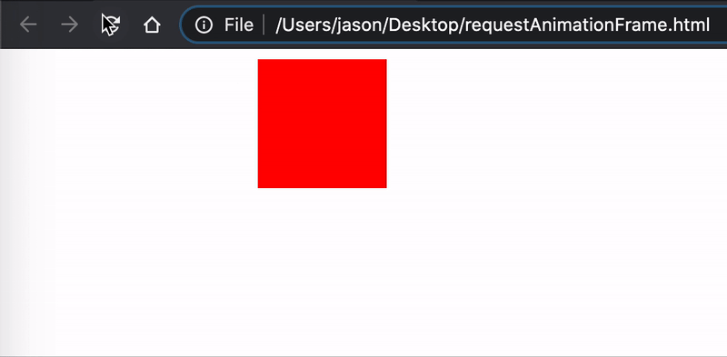
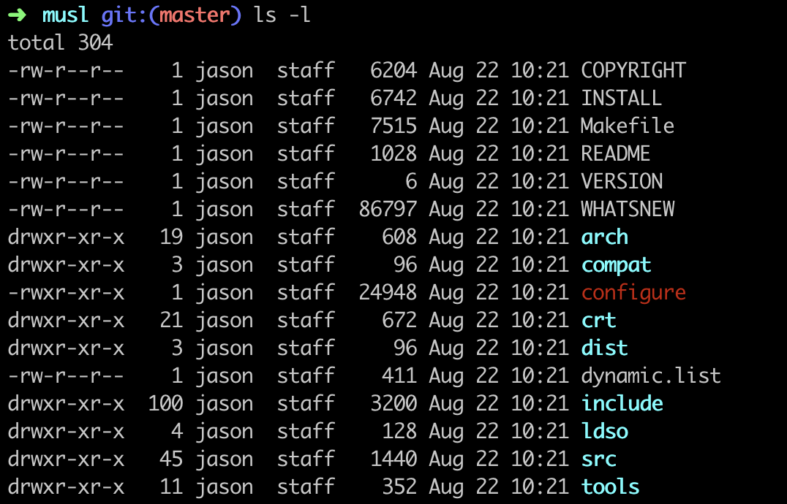

- 00 开篇词 我们为什么要了解 WebAssembly？.md.html
- 01 基础篇：学习此课程你需要了解哪些基础知识？.md.html
- 02 历史篇：为什么会有 WebAssembly 这样一门技术？.md.html
- 03 WebAssembly 是一门新的编程语言吗？.md.html
- 04 WebAssembly 模块的基本组成结构到底有多简单？.md.html
- 05 二进制编码：WebAssembly 微观世界的基本数据规则是什么？.md.html
- 06 WAT：如何让一个 WebAssembly 二进制模块的内容易于解读？.md.html
- 07 WASI：你听说过 WebAssembly 操作系统接口吗？.md.html
- 08 API：在 WebAssembly MVP 标准下你能做到哪些事？.md.html
- 09 WebAssembly 能够为 Web 前端框架赋能吗？.md.html
- 10 有哪些已经投入生产的 WebAssembly 真实案例？.md.html
- 11 WebAssembly 在物联网、多媒体与云技术方面有哪些创新实践？.md.html
- 12 有哪些优秀的 WebAssembly 编译器与运行时？.md.html
- 13 LLVM：如何将自定义的语言编译到 WebAssembly？.md.html
- 14 有哪些正在行进中的 WebAssembly Post-MVP 提案？.md.html
- 15 如何实现一个 WebAssembly 在线多媒体处理应用（一）？.md.html
- 16 如何实现一个 WebAssembly 在线多媒体处理应用（二）？.md.html
- 17 如何实现一个 WebAssembly 在线多媒体处理应用（三）？.md.html
- 18 如何进行 Wasm 应用的调试与分析？.md.html
- 19 如何应用 WASI 及其相关生态？.md.html
- 20 总结与答疑.md.html
- 结束语 WebAssembly，未来已来.md.html
- 捐赠
01 基础篇：学习此课程你需要了解哪些基础知识？
你好，我是于航。
在我们正式进入到 WebAssembly 的学习之前，为了帮助你更好地理解课程内容，我为你准备了一节基础课。
在这一节基础课中，我将与编程语言及计算机基础相关的一些概念，按照其各自所属的领域进行了分类，供你进行本课程的预习与巩固。
这些概念大多都相互独立，因此你可以根据自己的实际情况选择性学习。在后面的课程中，我将会直接使用这些概念或术语，不再过多介绍。当然，如果你对这些知识足够熟悉，可以直接跳过这节课。
JavaScript
接下来，我将介绍有关 JavaScript 的一些概念。其中包括 ECMAScript 语言规范中提及的一些特性，以及一些经常在 Web 应用开发中使用到的 JavaScript Web API。
window.requestAnimationFrame
window.requestAnimationFrame 这个 Web API ，主要用来替代曾经的 window.setInterval 和 window.setTimeout 函数，以专门用于处理需要进行“动画绘制”的场景。
该方法接受一个回调函数作为参数，该回调函数将会在下一次浏览器尝试重新绘制当前帧动画时被调用。因此，我们便需要在回调函数里再次调用 window.requestAnimationFrame 函数，以确保浏览器能够正确地绘制下一帧动画。
这个 API 一个简单的用法如下所示。
<html>
<head>
<style>
div {
width: 100px;
height: 100px;
background-color: red;
position: absolute;
}
</style>
</head>
<body>
<div></div>
</body>
<script>
let start = null;
let element = document.querySelector('div');
const step = (timestamp) => {
if (!start) start = timestamp;
let progress = timestamp - start;
element.style.left = Math.min(progress / 10, 200) + 'px';
if (progress < 2000) {
window.requestAnimationFrame(step);
}
}
window.requestAnimationFrame(step);
</script>
</html>
在这段代码中为了便于展示，我们直接连同 CSS 样式、HTML 标签以及 JavaScript 代码全部以“内嵌”的方式，整合到同一个 HTML 文件中。
页面元素部分，我们使用
标签绘制了一个背景色为红色，长宽分别为 100 像素的矩形。并且该矩形元素的 position 属性被设置为了 “absolute”，这样我们便可以通过为其添加 “left” 属性的方式，来改变当前矩形在页面中的位置。
在 JavaScript 代码部分，我们首先通过 “document.querySelector” 的方式获取到了该矩形对应的 DOM 元素对象。并编写了一个用于绘制动画的函数 “step”。
在这个函数定义的最后，我们调用了 window.requestAnimationFrame 方法，来触发对动画下一帧的绘制过程。由此便构成了一个间接递归，动画便可以持续不断地绘制下去，直到 “progress < 2000” 这个条件不再成立。
对于这段动画的实际播放效果，你可以参考下面这张动图

此时，整个矩形也被移动到了距离页面最左侧边界 200 像素的位置。这里你可以思考一下，整个动画从开始到结束一共持续了多长时间呢？
Performance API
相信单从名字上，你就能够猜测出这个 Web API 的主要功能了。没错，借助于 Performance API，我们可以非常方便地获得当前网页中与性能相关的一些信息。比如其中最常用的一个应用场景 —— “测量一段 JavaScript 代码的执行时间”。
我们可以使用名为 Performance.now 的 API 来达到这个目的。一段示例代码如下所示。
let start = performance.now();
for (let i = 0; i < 10e7; ++i) {}
// Time Span: 97.4949998781085 ms.
console.log(`Time Span: ${performance.now() - start} ms`);
这段代码十分简单。首先我们调用 performance.now()，来获得当前时刻距离 “time origin” 所经过的毫秒数。这里你可以把 “time origin” 简单理解为当前页面创建的那个时刻。
然后我们执行了一千万次的空循环结构，主要用于模拟耗时的待测量 JavaScript 逻辑。在代码的最后，我们通过 “performance.now() - start” 便可以得到，当前时刻与上一次在 start 处所测量的时刻，两者相差的时间间隔。这段时间便是一千万次空循环结构所消耗的时间。
TypedArray
顾名思义，TypedArray 便是指“带有类型的数组”，我们一般简称其为“类型数组”。
我们都知道，在默认情况下，出现在 JavaScript 代码中的所有数字值，都是以“双精度浮点”的格式进行存储的。
也就是说，假设我们有如下所示的一个普通 JavaScript 数组，对于数组内部的每一个元素，我们都可以重新将其赋值为双精度浮点类型所能表示值范围内的，任意一个值。
你可以试着将该数组的第一个元素的值设置为 “Number.MAX_VALUE”。该值表示在 JavaScript 中所能表示的最大数值，在我本机上的结果为 “1.7976931348623157e+308”。
let arr = [1, 2, 3, 4];
而 TypedArray 则不同于传统的 JavaScript 数组。TypedArray 为内部的元素指定了具体的数据类型，比如 Int8 表示的 8 位有符号整型数值、Float32 表示的 32 位单精度浮点数值，以及 Uint32 表示的 32 位无符号整型数值等等。
TypedArray 实际上构建于底层的“二进制数据缓冲区”，在 JavaScript 中可以由 ArrayBuffer 对象来生成。ArrayBuffer 描述了一个字节数组，用于表示通用的、固定长度的原始二进制数据缓冲区。
由于 ArrayBuffer 中的数据是以“字节”为单位进行表示的，因此我们无法直接通过 ArrayBuffer 对象来操作其内部的数据，而是要通过 TypedArray 以某个固定的“类型视图”，按照某个具体的“数据单位量度”来操作其内部数据。
如下代码所示，我们可以通过几种常见的方式来使用 TypedArray。
const DEFAULT_INDEX = 0;
// Way one:
const int8Arr = new Int8Array(10);
int8Arr[DEFAULT_INDEX] = 16;
console.log(int8Arr); // Int8Array [16, 0, 0, 0, 0, 0, 0, 0, 0, 0].
// Way two:
const int32Arr = new Int32Array(new ArrayBuffer(16));
int32Arr.set([1, 2, 3], 0);
console.log(int32Arr); // Int32Array [1, 2, 3, 0].
这里我列出了两种 TypedArray 的使用方式。第一种，我们可以直接通过相应类型的 TypedArray 构造函数来构造一个类型数组。比如这里我们使用的 Int8Array，其构造函数的参数为该数组可以容纳的元素个数。然后，我们修改了数组中第一个元素的值，并将整个数组的内容“打印”了出来。
第二种使用方式其实与第一种十分类似，唯一的不同是我们选用了另一种 TypedArray 的构造函数类型。该构造函数接受一个 ArrayBuffer 对象作为其参数，生成的 TypedArray 数组将会以该 ArrayBuffer 对象作为其底层的二进制数据缓冲区。
但需要注意的是，由于 ArrayBuffer 的构造函数其参数指定了该 ArrayBuffer 所能够存放的单字节数量，因此在“转换到”对应的 TypedArray 时，一定要确保 ArrayBuffer 的大小是 TypedArray 元素类型所对应字节大小的整数倍。
另一个需要关注的点是，在方法二中，我们使用了 TypedArray.prototype.set 方法将一个普通 JavaScript 数组中的元素，存放到了刚刚生成的，名为 int32Arr 的类型数组中。
该方法接受两个参数，第一个参数为将要进行数据读取的 JavaScript 普通数组；第二个参数为将要存放在类型数组中的元素偏移位置。这里我们指定了第二个参数为 0，因此会从 int32Arr 的第一个元素位置开始存放。
C/C++
在这个部分中，我将介绍有关 C/C++ 语言的一些概念。其中包括在编写 C/C++ 代码时可以使用到的特殊语法结构，以及在编译 C/C++ 源代码时的特殊编译器行为和选项。
extern “C” {}
通常我们在编译一段 C++ 源代码时，由于 C++ 天生支持的“函数重载”特性，因此需要一种能够在最终生成的可执行文件中，区别出源代码中定义的同名函数的机制。编译器通常会使用名为 “Name Mangling” 的机制来解决这个问题。
Name Mangling 会将 C++ 源代码中的函数名，在编译时进行一定的变换。这样，重载的同名函数便可以在可执行文件中被区分开。一般的实现方式通常是将函数名所对应函数的实际函数签名，以某种形式拼接在原有的函数名中。举个例子，假设我们有如下这段 C++ 代码。
int add(int x, int y) {
return x + y;
}
int main(int argc, char** argv) {
int x = add(0, 1);
std::cout << x;
return 0;
}
经过编译，我们可以使用诸如 readelf / objdump / nm 等命令行工具，来查看生成的可执行文件其内部的符号列表。然后你会发现我们在源代码中定义的那个函数 “add”，名称在经过 Name Mangling 处理后变成了 “_Z3addii”。
而 “extern “C” {}” 这个特殊的语法结构便可以解决这个问题。我们按照以下方式改写上述代码。
#include <iostream>
extern "C" {
int add(int x, int y) {
return x + y;
}
}
int main(int argc, char** argv) {
int x = add(0, 1);
std::cout << x;
return 0;
}
在经过编译后，以同样的方式查看编译器生成的可执行文件内的符号信息，你会发现我们在源代码中定义的函数 “add” 其名称被保留了下来。
之所以会产生这样效果，是由于在这个特殊的结构中，C++ 编译器会强制以 C 语言的语法规则，来编译放置在这个作用域内的所有 C++ 源代码。而在 C 语言的规范中，没有“函数重载”这类特性，因此也不会对函数名进行 “Name Mangling” 的处理。
DCE（Dead Code Elimination）
在编译器理论中，DCE 是一种编译优化技术，将其翻译成中文即“死码消除（没有业界统一的中文叫法）”。从名字上你可以理解为，通过 DCE 这种技术，编译器可以将源代码中没有使用到的代码从最后的目标产物中移除，以便优化其最终大小及执行效率。
但实际上 DCE 会更进一步，它消除的是那些对程序最后运行结果没有任何影响的代码，而不仅仅是没有用到的代码。
同样的，我们来举个例子。比如对于下面这段 C/C++ 代码，编译器会怎样进行 DCE 优化呢？
int foo() {
int a = 24;
int b = 25; // 没有被使用到的变量 b；
int c;
c = a << 2; // 变量值无关乎外部输入；
return c;
b = 24;
return 0;
}
一般来说，我们可以得到如下与汇编代码等价的 C/C++ 代码优化结果。
int foo() {
return 96;
}
这里你可以按照我在代码中给出的注释信息，来尝试思考一下，编译器是如何优化我们之前那段 C/C++ 代码的，相信这一定不会难住你。
-O0 / -O1 / -O2 等优化编译选项
在诸如 Clang / GCC 等编译器中，我们通常可以为编译器指定一些有关编译优化的标记，以让编译器可以通过使用不同等级的优化策略来优化目标代码的生成。而诸如 -O0 / -O1 / -O2 一直到 -Os 与 -O4 等选项，便是这些优化标记中的一部分。
在通常情况下，编译器会使用 “-O0” 来作为默认的编译优化等级。在该等级下，编译器一般不会进行任何优化，因此可以在最大程度上降低编译时间，保留最多的调式性信息。此模式一般用于对应用程序进行调试，亦可作为默认的本地开发时编译选项。
相反，诸如 “-O3” 与 “-O4” 等标记，一般用于对“生产版本”进行深入的优化。所谓“生产版本”是指即将发布给用户使用的二进制版本。对于这些版本，我们需要使用较高的优化等级，以尽量提升可执行程序的运行性能。
在这些编译优化等级下，编译器会启用多种优化策略来优化输入代码。相对的，这些选项通常也会提升编译时间，并且使得编译结果难以进行调试。所以实际上，不同的优化编译选项，其实对应着不同的使用场景。
计算机基础知识
在这个部分中，我将给你介绍几个计算机基础知识中的常见概念。
原码、反码和补码
我们知道，在计算机科学中，数字一共有三种表示方式，即“原码”、“反码”和“补码”。但实际上，计算机在存储数字值时会采用“补码”的形式。由于浮点数通常会采用 IEEE-754 标准进行编码，因此这里我们不讨论浮点数的补码形式，仅讨论整数。
这里我以有符号数 “-10” 为例，来给你介绍一下它从原码到反码，最后再到补码的具体转换过程。
首先，对于原码来说，其最高位会被用来当做符号位，该位为 “0” 表示正数，“1” 则表示负数。假设这里我们使用一个 1 字节（8 位）大小的 “signed char” 有符号整数类型变量来存储该数字，则 “-10” 所对应的原码如下。
1000 1010
而要将原码转换为对应的反码，我们需要把上述二进制数字的最高位符号位保持不变，而将其他位取反。也就是把 “1” 变 “0”，“0” 变 “1”。得到的反码如下所示。
1111 0101
最后，为了将反码再转换为补码，我们只需要为上述二进制数字再加上“一”即可。
1111 0110
对于无符号数而言，由于它没有符号位，因此变量对应的所有数据位都可以用来存放它的值。并且它的原码、反码以及补码三种形式均完全相同。也就是说，无符号数的反码和补码，与其原码保持一致。
ACL（Access Control List）
ACL 翻译成中文即“访问控制列表“，它负责告诉计算机操作系统，每一个用户对特定的系统对象（比如某个文件）具有哪些访问权限。在 ACL 中，每一个条目都包含有权限相关的主体与相应可以执行的操作。在类 Unix 系统中，最为直观的一个 ACL 的体现便是 “ls -l” 命令的输出结果，如下图所示。

在这张图中，“ls -l” 命令打印出了当前位置下的所有文件与文件夹信息。附带的，还有针对每一个文件或文件夹的权限及所有者信息。比如以 “rwx” 形式表示的，针对不同种类用户分配的，对于这些文件或文件夹所能够执行的操作信息（可读、可写、可执行）。以及文件或文件夹所有者的名字及其所在组的信息。总而言之，这便是 ACL 在 Unix 中的一类直观的表现形式。
总结
好了，讲到这，今天的内容也就基本结束了。最后我来给你总结一下。
在本节基础课中，我主要给你介绍了三部分内容。这些内容分别涉及 JavaScript 语言和相关 API 的概念及用法、C/C++ 相关的一些语言及编译时特性，以及其他的一些计算机基础知识。
其中，JavaScript 方面，我们介绍了专用于制作 JavaScript 动画的 window.requestAnimationFrame API 的简单用法，以及用于测量网页性能数据的 Performance API 的简单用法。
C/C++ 方面，我们主要介绍了 “extern “C” {}” 结构的基本用法，该结构可用于“停用” Name Mangling 机制。定义在该结构内的函数在经过编译后，其名称不会被改变。
除此之外，DCE 作为一种编译器常用的优化技术，将会帮助我们在最终输出的二进制文件内，移除对源代码功能没有影响的代码部分，以优化可执行文件的性能。而 “-O0”、“-O1” 与 “-O2” 等优化编译选项，则将会影响 DCE 的具体“功效”。
最后在计算机基础知识方面，我们介绍了 “原码、反码、补码”，以及 ACL 的概念。前者主要通过不同的形式来表示计算机中的“数字”，当实际存储时，计算机会采用“补码”的形式。而 ACL 通常是计算机权限控制系统的一个重要组成部分，它代表了一系列通过“访问控制列表“来管理系统权限的模式。
希望这节基础课能够为你在接下来的 WebAssembly 学习之旅中，提供一些帮助。
课后思考
最后，我们来做一个思考题吧。
这个问题引申自我们在本节课中介绍的“原码”、“反码”以及“补码”的概念。你知道在计算机中，有符号数之间的减法操作（比如 “10 - 3”）是如何进行运算的吗？
今天的课程就结束了，希望可以帮助到你，也希望你在下方的留言区和我参与讨论，同时欢迎你把这节课分享给你的朋友或者同事，一起交流一下。
© 2019 - 2023 Liangliang Lee. Powered by gin and hexo-theme-book.